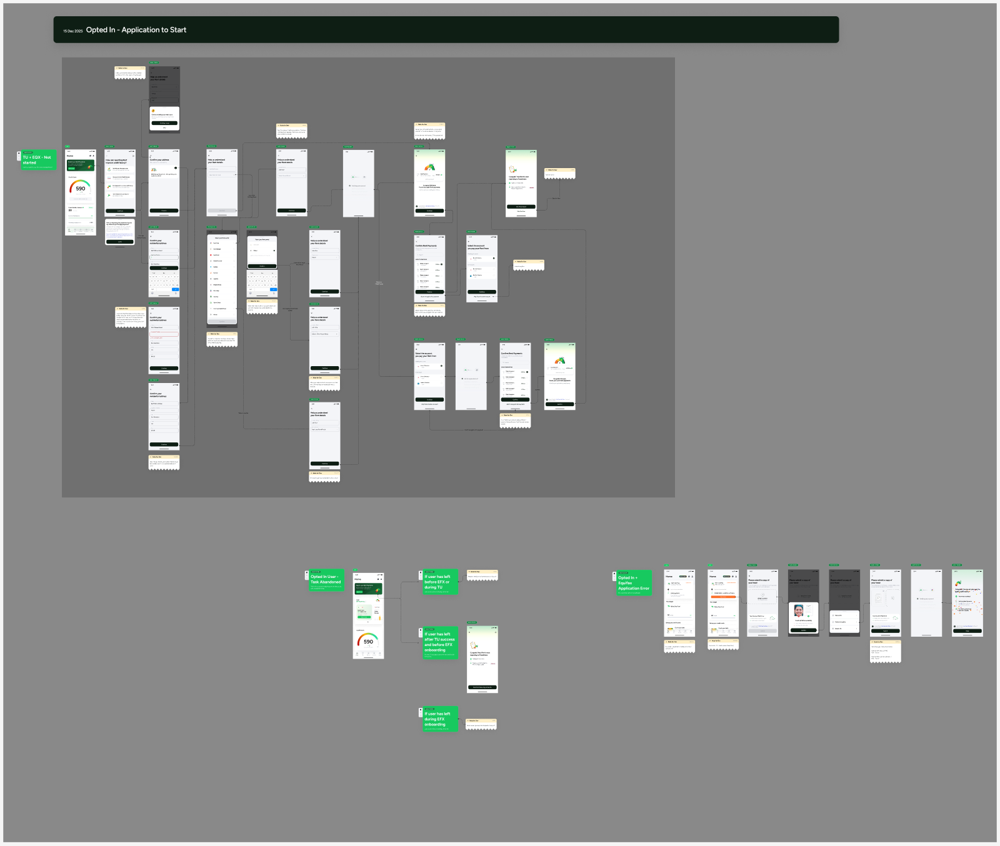
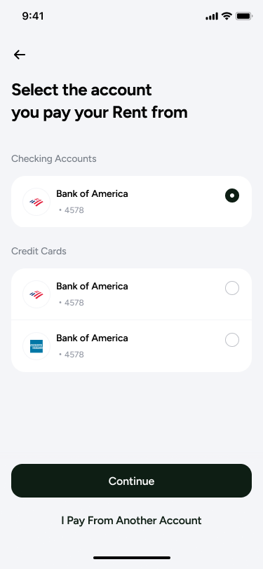
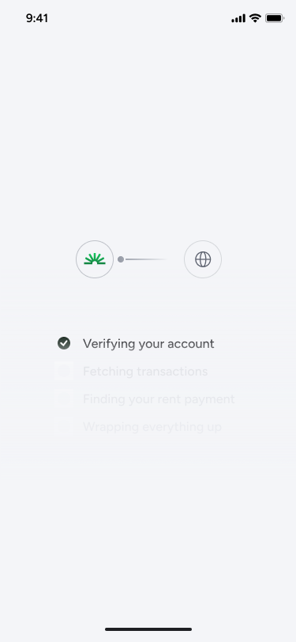
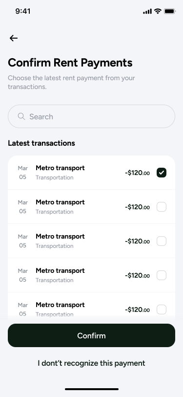
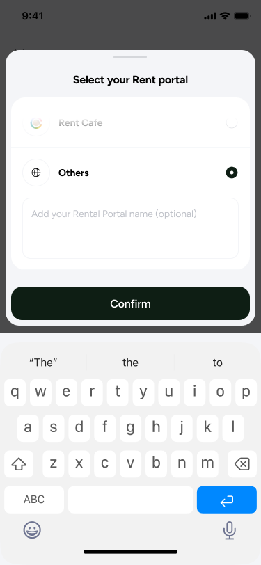

Rent reporting for two bureaus, and the three weeks it took to agree what to build.
Bright's rent reporting funnel, rebuilt to carry a second credit bureau. I owned the flow, the edge cases, the disclosures, the visual QA and the release sign-off. I wrote the post-mortem in December, the week design closed and three months before the thing shipped.
The biggest payment most people make counts for nothing on their credit file.
Rent is the largest recurring cheque in most household budgets, and unless somebody reports it to a credit bureau it does nothing for the payer's credit history. Bright's rent reporting funnel exists to close that gap: find the rent payment inside a user's linked transactions, get it confirmed, and report it.
V3 is the version I owned. The job was to take a flow built for one bureau, TransUnion, and make it carry two, with a second bureau added alongside. Two bureaus that want different fields and report on different logic, behind one funnel that has to stay simple enough for someone to finish in a sitting.

Three weeks of work. Done properly, four to six days.
On 23 December I sent my design lead a post-mortem nobody had asked for. The funnel had gone back to the drawing board repeatedly and I wanted the reasons written down while they were still fresh.
Six things had changed underneath the design after they were settled. Four of them:
The first conversation established that no password or username would be required. That turned out not to be true, after the flow had been built around it.
Agreed on three occasions with three different logics, each implying different required fields. The edge cases were never flow-mapped, so every round was rediscovery.
Whether to offer "Other", "I don't have a portal" or a skip was aligned, then reverted to an older version in a late review. That bandwidth was written off.
The requirements were not usable as given. I designed against them anyway instead of stopping to ask for better ones, and they were removed. That one is mine.
Not all three weeks are product's to answer for. My own leave was among the blockers, and the flow map that would have caught most of the six was a design deliverable nobody but me was going to produce. I wrote the retro so I could understand when and how to push back on product's decisions. Knowing which conversations were worth stopping for is the part I kept.
Find the payment, confirm it, report it.
The funnel has to do something slightly awkward: work out which of a user's transactions is rent, and then get them to vouch for it. Everything else is in service of that. Pick the account rent goes out from, wait while transactions are pulled, confirm the right payment, name the portal if there is one.




Two screens carry the arguments. The staged loader in 02 sets an expectation across four steps instead of showing one indeterminate spinner. The "Others" option with a free-text portal name in 04 is the decision from the retro above: aligned, reverted, reinstated.
Forty issues on the last day, and the argument that followed.
Design visual QA ran on release day and logged forty issues into Figma, which drew a fair question from the senior stakeholder: why is this happening on the last day? The honest answer is that design received the built screens at around one that afternoon.
I signed off the next morning with three issues explicitly unresolved and accepted rather than quietly dropped: a missing back button on two screens, a static loader standing in for the Lottie version, and a missing gradient shadow on a scrolled modal. Writing down what you are shipping broken is the part of a sign-off that actually costs something.
One open item was agreed as a non-blocker: opting into rent from the dashboard and then searching "Rent" in the AI tab re-surfaced the entry screen and looped the user. Product signed off alongside, with the rollout plan stated plainly — five percent for the first few days, then scale.
It reached fifteen percent, and stayed there.
The split moved from five percent at launch to fifteen percent by 26 March. When I checked again on 25 June it was still fifteen percent, with the old flow carrying the other eighty-five. Whether that is deliberate caution or a stalled rollout is a question I am still asking, and I would rather write that here than round it up into an impact number.
I do not have conversion or credit-outcome numbers for this funnel. The design team is not routinely given them, which is itself one of the blockers I have raised internally.
Flow mapping is not a deliverable, it is the argument.
Every one of the six delays came from the same root: a decision that felt settled in conversation but was never written down against a branch of the flow. A mapped flow with the edge cases on it is not a nicer version of a screen list. It is the artefact that makes people notice they disagree, early, when disagreeing is cheap.
The second thing is about ownership. I did the visual QA, held the sign-off, logged the three defects I was accepting, and then tracked the thing for four months afterwards. None of that is drawing screens, and all of it is the job.